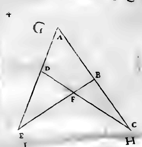

Proposition I: First Element (Menelaus Transversal)¶


Proposition I · Problem I · Element I
Let two straight lines EA, CA meet at A, and let two others, CD, EB, meet them at the points D and B, intersecting each other at F. Let it be proposed to us from the points E, C, A to suspend heavy bodies in such a ratio that weight G has to H the same ratio as \(CB\) to \(BA\); and the same weight G to I, that which \(ED\) has to \(DA\); and weight I to the two H, G that which \(BF\) has to \(FE\); and let the heavy body H to the two heavy bodies I, G be as \(DF\) to \(FC\).
(Tab. 1, Fig. 4; Postulate) Let a weight H be found to which any proposed weight G has that ratio which the straight line \(CB\) has to \(BA\); and let the same weight G have to another I that ratio which the straight line \(ED\) has to \(DA\); I say that the straight line \(BF\) is to \(FE\) as weight I to the two heavy bodies G, H; and the straight line \(DF\) to \(FC\) itself as weight H to the two weights I, G.
(Axiom I) Since DC is a certain balance-beam, at whose extremity D is the center of gravity—and therefore the whole weight of the heavy bodies G, I, as if they were one weight suspended from D—while at the other extremity C is the other weight H, the center of gravity of the aforesaid weights G, I, and H will lie on the same balance-beam DC. Similarly, because EB is another balance-beam, at whose extremity B is the center of gravity—and therefore the whole weight of the heavy bodies G, H— while at the other extremity E is the other weight I, the center of gravity of the aforesaid weights G, H, and I existing in that former position will lie on the same balance-beam EB.
(from the first lemma) Since therefore the weights G, I, H considered in the same situation have a unique center of gravity, and this has been shown to lie both on the balance-beam DC and on
f. 0020 · p. 3the balance-beam EB, it will necessarily exist at the intersection F. Therefore (from the second lemma) as weight I to the two G, H together, so \(BF\) to \(FE\); similarly as weight H to the other two G, I together, so will \(DF\) be to \(FC\), which was to be done.
Corollary. It is deduced that point F is the center of gravity of all the heavy bodies I, G, H in that position.
Scholium. This proposition and the four that follow in order I call elements, inasmuch as they are the first foundations upon which most things rest.
This figure A E F C we shall set forth again after the elements have been delivered, and not rarely; yet to avoid a multiplicity of letters, we shall signify the weights G, I, H by the letters A, E, C; the aggregate of weights G, H and the other of G, I we shall denote by the letter B and the letter D, since they mark the center of gravity at which the heavy bodies suspended from A and C, and from A and E, weigh; and all the weights together we shall express by the letter F, because there, as at the center of gravity, they weigh, as has been said.